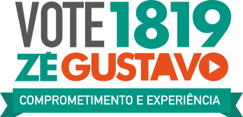
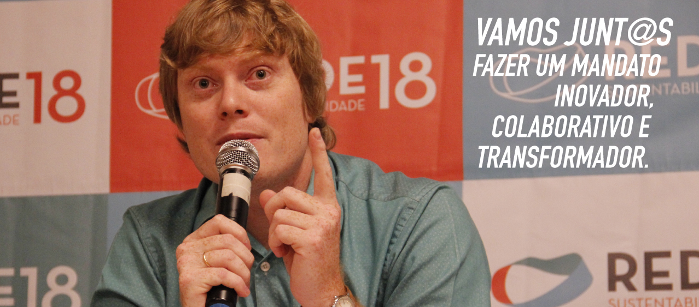
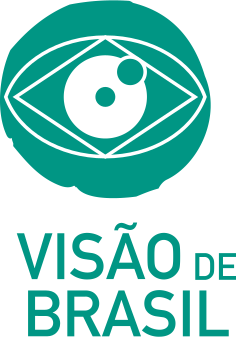
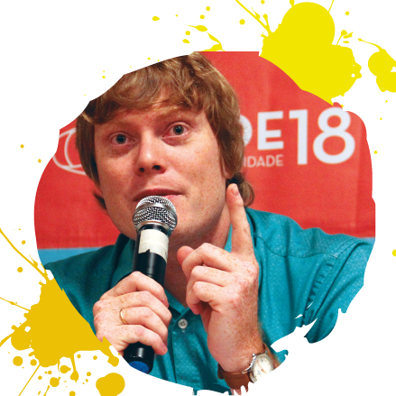

Nasci no interior de São Paulo e estudei Administração Pública na UNESP de Araraquara com o sonho de transformar a política. Participei ativamente do movimento estudantil e fui selecionado pelo governo do Canadá para um programa de jovens lideranças mundiais, onde aprofundei minha experiência no combate à corrupção. De volta ao Brasil, integrei o Movimento Nova Política e em 2014 concorri pela primeira vez ao mandato de deputado federal. Tive 14,5 mil votos em 350 municípios. Sou líder RAPS (Rede de Ação Política pela Sustentabilidade) e líder RenovaBR.

Lideramos várias iniciativas de combate à corrupção e a REDE foi considerado o partido que mais combate à corrupção pela Fundação Getúlio Vargas.
Fui o responsável pelos pedidos de cassação dos mandatos de Eduardo Cunha, Paulo Maluf, Delcídio do Amaral, Aécio Neves e Rocha Loures.
Criamos o partido e nas eleições de 2016 elegemos 6 prefeitos, 187 vereadores e 20 vice-prefeitos.
Apresentamos uma PEC (Proposta de Emenda Constitucional) para o fim do auxílio-moradia para políticos e servidores públicos, com o apoio de mais de 600 mil assinaturas de cidadãos.
Entramos no STF com uma ação trabalhista contra a "Portaria do Trabalho Escravo".
No impeachment denunciamos a chapa Dilma-Temer no Superior Tribunal eleitoral e defendiamos novas eleições. No governo Michel Temer apresentamos 2 pedidos para sua cassação.
#RENOVAR É INOVAR = APRESENTAMOS OS CODEPUTAD@S
Para renovar a política teremos os CODEPUTAD@S. São pessoas comuns, que não recebem salário, mas dividem as responsabilidades sobre nossas decisões, garantindo que elas atendam às necessidades reais das pessoas em suas cidades. Assim, não representaremos só um grupo ou uma bandeira, mas milhares de necessidades.
#EDUCAÇÃO COMO COMPROMISSO
Garantir educação de qualidade para todos, com universalização da educação infantil (creche para todos) e educação básica de tempo integral. Expandir o acesso à universidade e investir no desenvolvimento dos professores.
#FORTALECER AS CIDADES E A QUALIDADE DOS SERVIÇOS
Nossas emendas parlamentares irão para projetos que tenham garantias de boa utilização. A equipe do mandato, composta de gestores públicos, auxiliarão os municipíos a melhorar a qualidade dos serviços prestados, com mais parcerias e maior fiscalização pelos cidadãos. O que hoje é usado como instrumento de POLITICAGEM será instrumento de fortalecimento dios municípios.
#POLÍTICA SEM PRIVILÉGIO
Reduzir 30% dos custos do mandato e doar 30% do salário líquido para a formação de novas lideranças: a política deve ser um serviço, não um privilégio.
#PROTEÇÃO AMBIENTAL E SANEAMENTO BÁSICO
Proteger o meio ambiente significa garantir mais qualidade de vida e a sustentabilidade da nossa existência. Isso transforma a vida das pessoas no presente também. Trabalharemos de forma incansável para aumentar o investimento em tratamento de resíduos sólidos e saneamento básico. Segundo a ONU, cada real investido em saneamento economiza 4 em tratamento de doentes e hoje mais de 100 milhões de brasileiros não tem acesso à coleta de esgoto e apenas 45% do esgoto gerado no país é tratado.
#ECONOMIA INOVADORA E EMPREENDEDORA
Investir num ecossistema de inovação com pesquisa, desenvolvimento de novas tecnologias, economia criativa de base sustentável e gerar mais oportunidades de emprego para os jovens.
#REDUZIR AS DESIGUALDADES
Diminuir as desigualdades sociais e econômicas, com aprimoramento das políticas de distribuição e geração de renda. Lutar para que as mulheres tenham de fato salários iguais aos dos homens e combater todo tipo de discriminação de raça, religião ou orientação sexual.

Durante o meu mandato, se eleito, sempre votarei todos os projetos de lei orientado pela visão de Brasil que acredito: politicamente democrático, economicamente próspero, socialmente justo, culturalmente diverso e ambientalmente sustentável.
